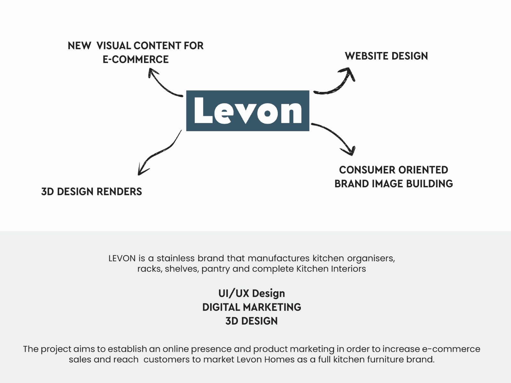
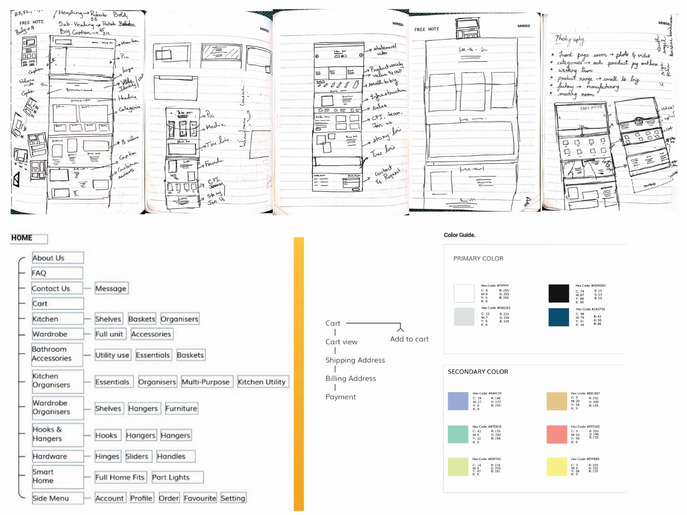
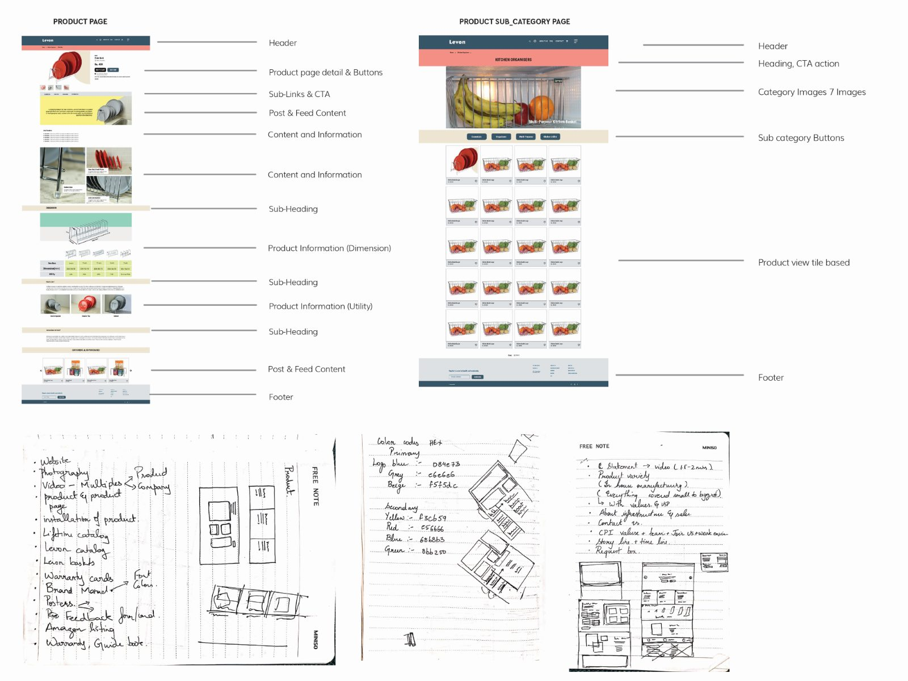

Levon
Levon is a stainless steel brand that manufactures kitchen organisers, racks, shelves, pantry and complete kitchen interiors. The project aims to establish an online presence and product marketing in order to increase e-commerce sales and market Levon Homes as a full kitchen furniture brand.
A manufacturer at scale with almost no direct channel.
Levon began in 1985 as Lifetime Wire Products and was renamed in 2012. It manufactures stainless steel kitchen organisers, racks, shelves, pantry systems and complete interiors — producing for groups including Godrej and Häfele, reaching more than 150 dealers, and carrying over 2,000 products across five sub-brands.
I joined as a design intern for eighteen weeks, covering the consumer website and a contractor rewards app.
Six hundred orders a day, and ten a month.
Retail and marketplace listings brought in roughly 600 orders a day. The company’s own website brought in about ten a month. It had been built in a hurry, functioned largely as a contact form, and showed almost none of the 2,000-product range.
The gap was not traffic or demand — both clearly existed elsewhere. It was that the site did not do the job the marketplaces were doing, and nobody had defined what job it should do instead.
Fix the architecture before touching the surface.
The temptation with a site that looks dated is to restyle it. I spent the first two phases on brand research, user scenarios, personas and information architecture instead — because a catalogue of 2,000 products across five sub-brands fails on navigation long before it fails on visual design.
That is a slow answer to give a client who can see their site is ugly. It cost visible progress in the early weeks, and it was the right order: restyling an unnavigable catalogue produces an attractive site nobody can buy from.
A five-phase route the team could keep using.
Research and architecture first, then a UI style guide with colour, type, log-in and icon styles, then sketches and low fidelity, then high fidelity with client and user feedback, then prototyping and onboarding. Type is Roboto Condensed over Roboto; the primary colour is #365567, the blue-grey carried through every wireframe.
A second project reworked the Lifetime Champion app into a Levon app for contractors, labourers and carpenters, who redeem promo codes for points against goods. The company treats them as a marketing channel in their own right, because customers ask carpenters for advice — which makes a rewards app a demand-generation tool rather than a loyalty scheme.
Five phases, research first.
The work started with interviews with the owners and a competitor review, then moved through architecture, a style guide, and progressively higher fidelity. Type is Roboto Condensed over Roboto; the primary colour is #365567, the blue-grey carried through every wireframe here.
- Phase 1Brand research, user scenarios, personas, information architecture.
- Phase 2UI style guide, colour scheme, font guide, log-in and icon styles.
- Phase 3Apex sketches, wireframes, low fidelity.
- Phase 4High fidelity, client and user feedback, feedback testing.
- Phase 5Prototyping, final onboarding, UI flow.
A second project reworked the Lifetime Champion app into a Levon app for the same audience — contractors, labourers and carpenters, who redeem promo codes against points for goods. The company treats them as a marketing channel in their own right, since customers ask carpenters for advice.
Four spreads.




Constraints, recorded honestly in the project document: no front-end developer, limited resources from the organisation, and no in-house knowledge of the page builder the site had to be delivered in.
What shaped the work as much as the brief did.
No front-end developer. Recorded honestly in the project document. The design had to be deliverable by someone else, in a page builder, later.
No in-house knowledge of that page builder. Nobody at the company knew the tool the site had to ship in, so the design could not assume any component would be easy.
Limited organisational resource. An eighteen-week internship against a 2,000-product catalogue and two products — which is why the deliverable is a system and a route rather than a finished site.
Wireframes and a method; not a launch.
Four spreads document the scope, the sketches and architecture, the colour guide, and annotated wireframes for home, about, log-in, contact, product and sub-category pages. The internship ended before implementation.
So there is no after-number to set against the ten orders a month. The before-number is real and sourced from the company; the after-number does not exist, and inventing one would be the easiest and worst thing I could do to this case study.
What I would do differently.
I would have shipped one page rather than specifying twelve. A single live product page, built in the actual page builder, would have tested every assumption in the architecture and given the company something that earned money while the rest was designed.
I would also have pushed harder on the 600-a-day number. Understanding why marketplaces converted — price, trust, delivery, search — would have told us what the site needed to match before we designed anything at all.